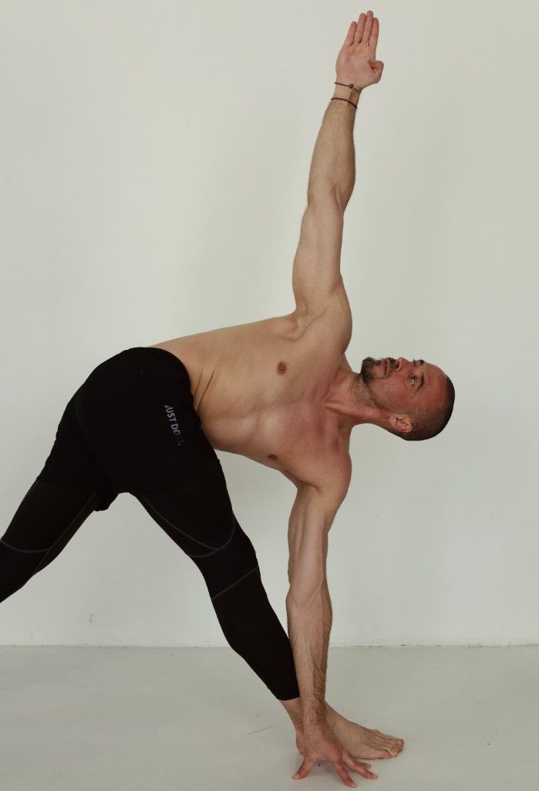
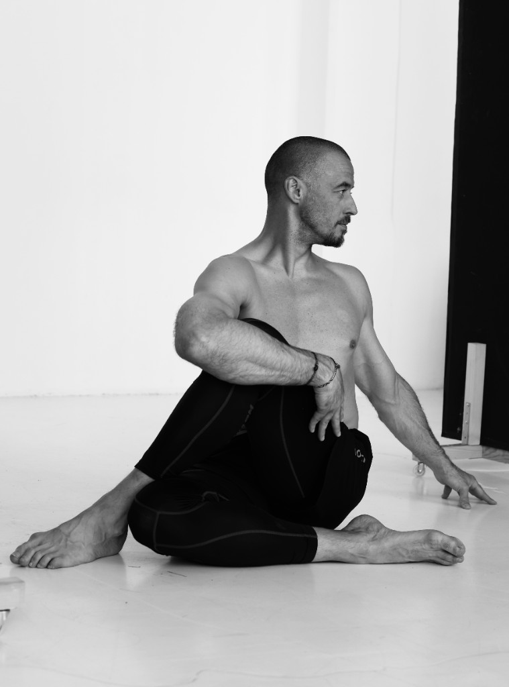
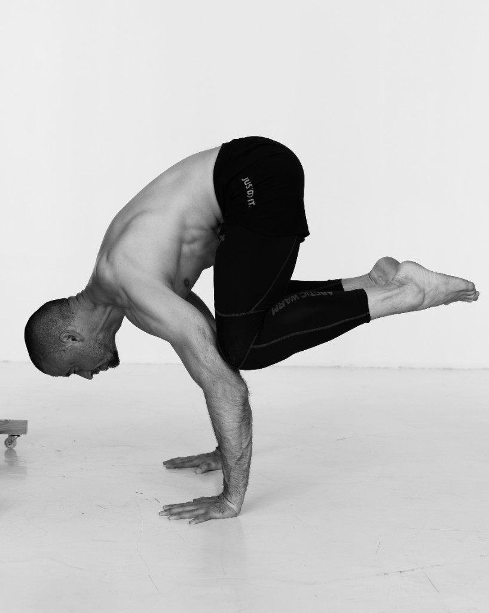
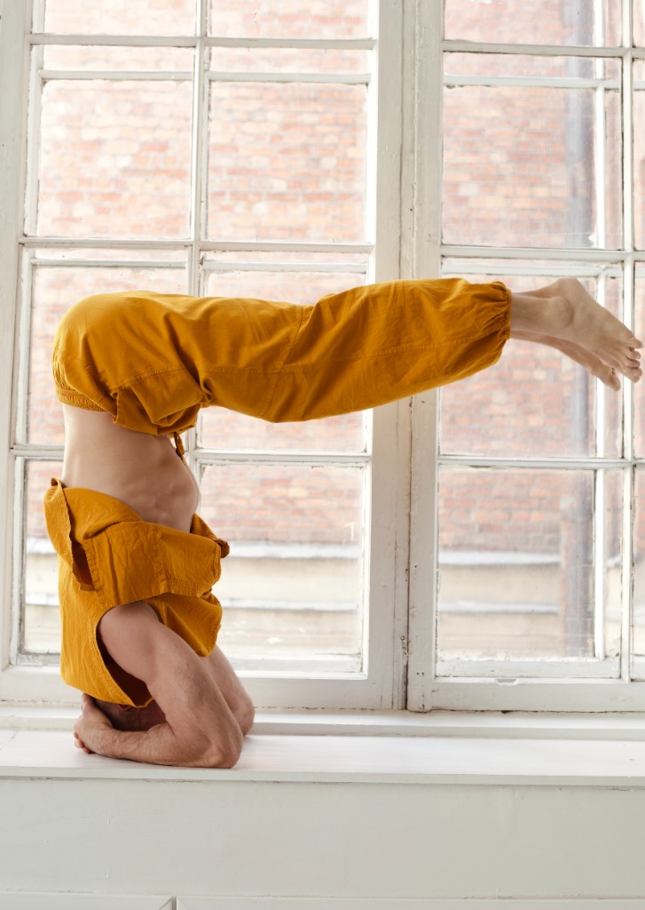
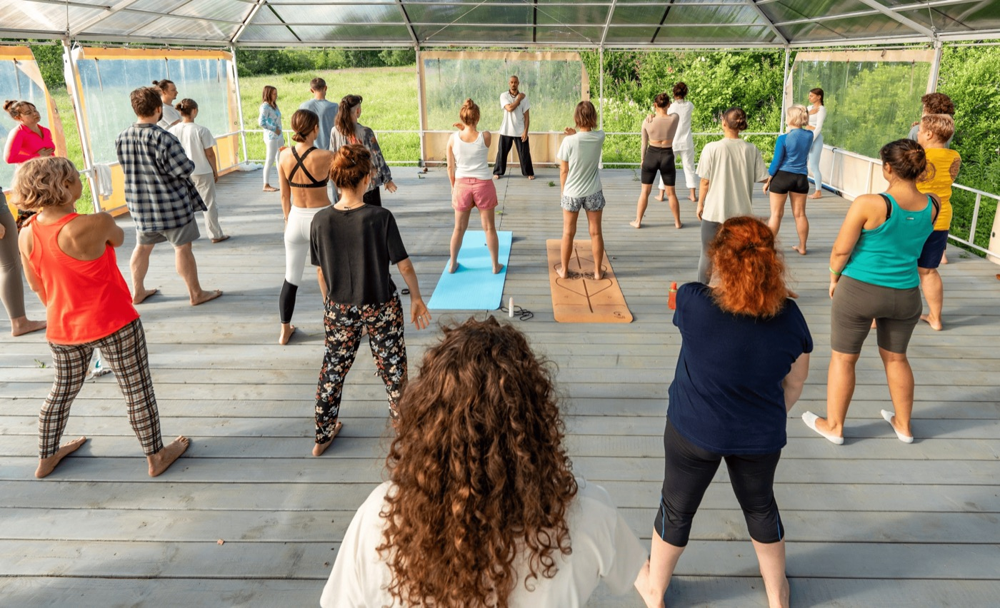
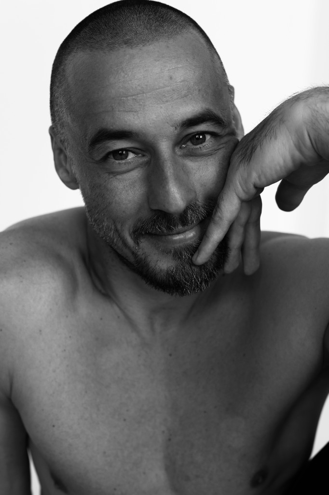

YouTube / приложения
Повторяете за тренером на экране.
Точка опоры
Изучаете карту своего тела и адаптируете практику под себя.
Авторский курс Ильи Баринова
Фундаментальный курс по йоге, телесной грамотности и устойчивой практике.
Для тех, кто хочет не просто повторять асаны, а понимать тело, дыхание, внимание и принципы безопасности на уровне, который можно применять самостоятельно.
Бесплатная практика для спины О методе
Подробнее о курсеЗнакомство с автором
Короткое видео — 1,5–2 минуты: голос, подача и логика практики без «продающего» давления.
Бесплатно
Короткая видео-практика в Telegram — чтобы почувствовать подход Ильи до решения о курсе.
Открыть практикуКогда внешнее рушится, единственное, на что можно опереться — то, что внутри.Точка опоры
Суть курса
«Точка опоры» собирает йогу в ясную систему: как входить в асаны без лишнего риска, как слышать ограничения тела, зачем нужно дыхание, как внимание меняет качество движения и почему регулярность важнее героических рывков.
Для кого
«Тело устало раньше, чем день начался — а вечером спина напоминает о себе тихо, но настойчиво.»
«Я занимаюсь годами, но каждый раз смотрю на экран и не понимаю: это моя асана или чужая картинка.»
«Голова перегружена, дыхание поверхностное — а тело будто живёт отдельно от меня.»
«Я работаю с людьми и их телами — и хочу видеть движение точнее, чем позволяет интуиция.»
Отличие
На рынке обычно три крайности: эзотерическая йога, сухая анатомия для профи или «умный фитнес» без внимания и дыхания. «Точка опоры» собирает другое.
Повторяете за тренером на экране.
Изучаете карту своего тела и адаптируете практику под себя.
Часто фокус на форме — иногда через боль и риск для суставов.
Безопасная механика и внутреннее состояние, а не «красивая картинка».
Мало связи с ежедневной практикой и нервной системой.
Движение + дыхание + внимание — на коврике и в обычном дне.
Метод
Подход Ильи соединяет йогу, цигун, тайцзицюань, дыхательные техники, медитацию и опыт реабилитационной работы. Это гибрид, которого почти нет на рынке: элитарное питерское искусство движения (Академия Вагановой), спортивная наука (Лесгафт, реабилитация ФК «Зенит») и мастерство восточных практик (чемпион Европы по тайцзицюань).
Вы учитесь видеть опору, ось, амплитуду, компенсации и зоны риска: спина, шея, таз, колени, плечи, дыхание.
Практика дыхания подаётся как инструмент регуляции состояния, а не как набор эффектных техник.
Фокус не на внешней сложности формы, а на том, как движение собирается изнутри: через вес, вектор, тонус и внимание.
Курс ведёт к самостоятельности: вы понимаете, что делать, зачем делать и как адаптировать практику под свой день.
«Практика работает, когда вы понимаете опору — в стопе, в тазе, в дыхании. Тогда поза перестаёт быть картинкой и становится опытом.»
Курс записан для домашнего формата: вам нужен коврик, немного пространства и готовность заниматься 3–4 раза в неделю по 40–50 минут.





Научная опора
Курс не подменяет медицину и не обещает вылечить заболевания. Его фокус — грамотное движение, дыхание, внимание и регулярность: направления, которые изучаются в современной доказательной базе как часть немедикаментозной поддержки здоровья и качества жизни.
Движение и спина
В курсе это переводится в осторожный принцип: двигаться, но не через боль; развивать силу, подвижность и осознанность постепенно.
WHO guidelineЙога и боль
Йога может быть полезной частью движения, но не должна подаваться как универсальное лечение. Поэтому курс строится через адаптации и учёт ограничений.
Cochrane reviewДыхание и стресс
На курсе дыхание не форсируется: участники учатся мягкому ритму, паузе и наблюдению за реакцией тела.
Systematic reviewВнимание
Медитация в курсе подаётся как тренировка внимания: без мистификации, без давления и без требования «выключить мысли».
Systematic reviewМатериалы приведены в ознакомительных целях и не заменяют консультацию врача.
Программа
Программа построена как фундамент: сначала безопасность и телесная логика, затем дыхание, внимание, медитация и интеграция в собственный ритм.
Финальный ретрит
Онлайн-часть даёт базу и регулярность, а ретрит — 3–5 дней живой практики на природе (формат и локация уточняются перед потоком): групповые занятия, тишина, разбор асан и дыхания с Ильей.
Это не «обязательный тур», а возможность закрепить навык в другом ритме — без суеты и отвлечений. Онлайн-курс остаётся полноценным маршрутом и без поездки.
Участие в ретрите обсуждается отдельно при записи на курс.

Результат
Уходит утренняя скованность. Понимаете, как «включить» или расслабить спину после рабочего дня за компьютером.
Дыхание становится инструментом управления стрессом: снимаете тревогу или усталость за 5–10 минут.
Есть готовый осознанный комплекс личной практики (~20 минут), который делаете сами — без подсказок из телефона.

Формат
Участники проходят темы вместе: практика, разбор, вопросы, домашние ориентиры и постепенное усложнение. Так знания не остаются конспектом, а превращаются в телесный навык.
Что вы освоите
Каждый блок курса переводит теорию в телесный опыт. Вы не просто слышите объяснение, а проверяете его в движении, дыхании и ощущениях.


Отзывы и кейсы
20 лет практики и работы с телом. Ниже — формат, в который можно добавить скриншоты из Telegram или видео.
Было: постоянная тянущая боль в пояснице после сидячей работы, страх «сделать хуже» на йоге.
Стало: занимаюсь самостоятельно по методу Ильи, понимаю опору и ось — боль ушла, появилось ощущение собранности.
Было: 2 года разрозненных уроков, непонятно, зачем асаны и как дышать.
Стало: собрал свою последовательность, перестал гнаться за глубиной формы.
Было: работаю с клиентами ЛФК, не хватало языка для объяснения движения.
Стало: точнее вижу компенсации и опору — проще адаптировать практику под человека.
Сюда — скрин переписки
Варианты участия
Точные цены и условия ранней брони — после заявки. Ниже — логика пакетов.
Узнать спец-стоимость по ранней брони
ЗаписатьсяПопулярный выбор
Узнать спец-стоимость по ранней брони
ЗаписатьсяУзнать условия ретрита
Обсудить участиеРанняя регистрация
Оставьте контакт — пришлём даты, формат, стоимость и условия ретрита. Без давления: сначала условия, потом решение.
Узнать условияFAQ
Да. Курс рассчитан на спокойный вход: безопасность, базовые принципы и адаптации.
Да. Полезен тем, кто хочет систему и глубже понять связь асан, дыхания и внимания.
Достаточно коврика и пространства. Опоры подберёте по ситуации.
Да, записи доступны на период курса — можно пересматривать сложные темы.
Да. Онлайн-часть можно пройти отдельно. Ретрит даёт дополнительное погружение, но не является обязательным условием участия.
Курс строится с вниманием к безопасности; при выраженной боли — с учётом рекомендаций врача.
Мини-диагностика
Без оценок и ярлыков — только чтобы увидеть, какие темы курса вам особенно пригодятся.
На модулях 2 и 4 мы разберём опору, ось, дыхание и то, как снять лишнее напряжение без «ломания» тела.
Записаться на курсЗаявка
Заполните форму на сайте — заявка придёт на почту. Мы ответим в Telegram, WhatsApp или email — как вам удобнее. Telegram остаётся как дополнительный канал.
Ответим в течение часа. Срочно — Telegram.